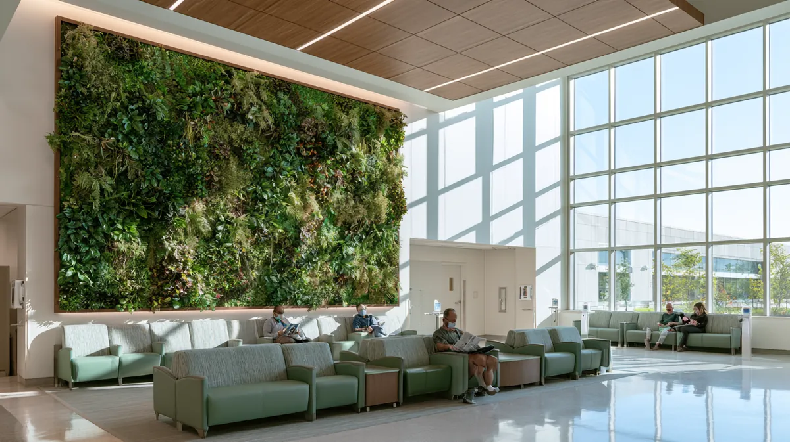
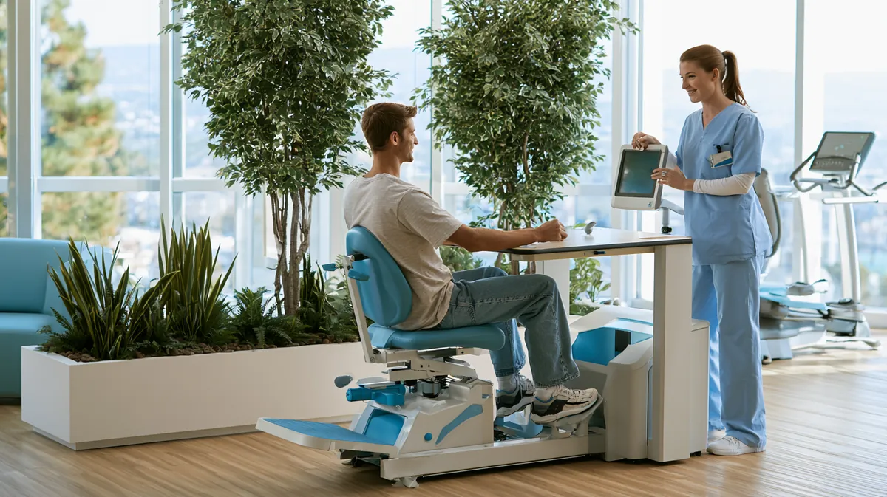
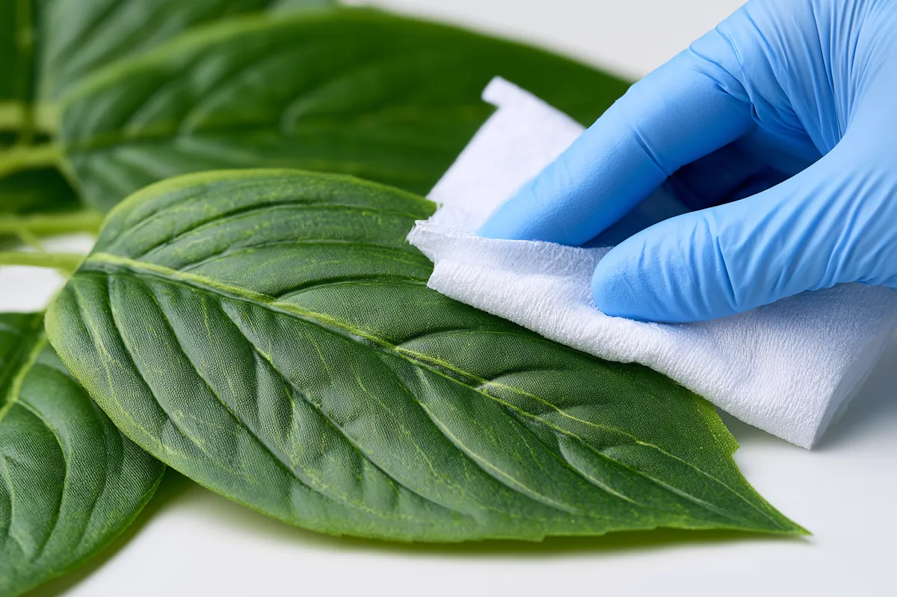

The Healing Power of Artificial Plants: How Healthcare Facilities Are Embracing Biophilic Design in 2026
Few environments ask more of their interior design than a hospital. The space has to feel calm and humane for frightened patients and their families, yet it must also satisfy some of the strictest infection-control and safety standards of any building type. For decades, those two goals pulled in opposite directions — and nature usually lost. In 2026, healthcare facilities are resolving that tension with high-quality artificial plants, capturing the proven healing benefits of greenery while honouring every clean-room protocol on the books.
The Healthcare Paradox: Nature's Benefits Without Nature's Risks
Healthcare facilities face a unique challenge. They need the therapeutic benefits of nature, but they cannot accept the contamination, allergen, and maintenance risks that living plants introduce into a sterile environment. It is a genuine paradox: the very thing that helps patients heal is also a vector for the things that make them sick.
Artificial plants are emerging as the resolution to that paradox. They look and read as nature to the human brain — which, as the research below shows, is where almost all of the therapeutic value lives — while remaining inert, cleanable, and completely free of soil, water, pollen, and mould.
The Science Behind Therapeutic Environments
The field of evidence-based healthcare design has spent more than thirty years measuring what happens when patients are exposed to natural elements. The findings are remarkably consistent: contact with nature, even visual contact, measurably accelerates recovery.
- Stress reduction. Patients in nature-enhanced rooms show roughly 20–30% lower cortisol levels — the body's primary stress hormone — than those in conventional clinical rooms.
- Pain management. Studies of patients with natural views report reductions in pain-medication requirements in the range of 15–25%, suggesting greenery measurably changes how pain is perceived and tolerated.
- Faster recovery. Surgical patients with plant or garden views have been observed to recover around 8.5% faster, with shorter post-operative stays.
- Improved mood. Depression and anxiety scores drop significantly in greened environments, an effect that matters as much for long-stay and palliative patients as for those in acute care.
The Recovery Effect of Biophilic Design
Measured improvements in patients exposed to natural elements versus conventional clinical environments.
Lower stress
Reduction in cortisol, the body's primary stress hormone, in nature-enhanced rooms.
Less pain medication
Lower analgesic requirements among patients with natural views.
Faster recovery
Shorter post-operative stays for surgical patients with plant or garden views.
Improved mood
Measurable drops in depression and anxiety scores in greened environments.
Figures reflect consistent findings across evidence-based healthcare design research.
What unites these findings is the mechanism. The benefit comes from the perception of nature — the forms, textures, and colours the visual system registers as living and restorative — not from the biological fact of a plant respiring in the room. That distinction is the entire reason artificial greenery works in healthcare: it delivers the perceptual input without the biological liability.
Why Live Plants Fail in Healthcare Settings
Hospitals were among the first institutions to restrict, and in many cases ban outright, live plants from patient-care areas — and the reasons are clinical, not aesthetic.
- Infection vectors. Soil and standing water are reservoirs for bacteria and fungi. Aspergillus and Pseudomonas, both associated with potted plants and cut-flower water, are particularly dangerous in oncology, transplant, and ICU settings.
- Allergen exposure. Pollen and mould spores pose a real threat to immunocompromised and respiratory patients — precisely the populations a hospital is least able to expose to additional risk.
- Maintenance disruption. Watering, pruning, and replacing live plants means non-clinical staff and moisture moving through controlled spaces, interrupting patient care and complicating cleaning routines.
- Inconsistent performance. Deep floor plates, artificial lighting, and tightly controlled HVAC are hostile to most live plants. They struggle, drop leaves, and die — and a dying plant in a hospital corridor undermines the very sense of calm it was meant to create.
Artificial Plants: The Healthcare Revolution

Infection Control Without Compromise
Modern artificial plants for healthcare are engineered to meet the same stringent requirements as the rest of the built environment around them:
- Zero soil or water. With no growing medium and no standing water, the microbial breeding grounds that disqualify live plants simply do not exist.
- Non-allergenic materials. Premium PE and engineered foliage produce no pollen, harbour no mould, and carry no fragrance — safe even around the most sensitive patients.
- Easy sterilisation. Non-porous leaves and vessels can be wiped down with hospital-grade disinfectants as part of routine cleaning, the same way any other surface in the room is handled.
- Consistent appearance. The installation looks healthy and vibrant on day one and on day one thousand — no seasonal decline, no struggling specimens, no gaps.
Therapeutic Benefits That Scale
Because the healing effect comes from perception rather than biology, artificial greenery delivers measurable patient-experience benefits that scale cleanly across an entire facility:
- Visual comfort. Greenery creates the calming, familiar, human environment that reduces anxiety in clinical spaces.
- Wayfinding assistance. Distinctive plantings act as landmarks, helping disoriented patients and visitors navigate complex multi-wing facilities.
- Privacy screening. Plant groupings and green wall panels soften clinical sightlines and carve intimate zones out of large, exposed waiting areas.
- Design consistency. A single specification can maintain the same therapeutic aesthetic across every department, from the lobby to the furthest patient room.
Implementation Strategies for Maximum Impact
Strategic Placement for Therapeutic ROI
Greenery does not need to be everywhere to be effective — it needs to be where psychological stress peaks. Concentrating installations in those locations delivers the strongest return:
- Patient rooms. A plant within a patient's daily field of view turns a clinical box into a personal healing environment.
- Waiting areas. The point of highest anxiety for most visitors — greenery here measurably lowers perceived wait stress before an appointment even begins.
- ICU and critical-care corridors. Visual relief for families enduring some of the hardest hours they will ever spend in a building.
- Rehabilitation spaces. Restorative, motivating surroundings that support the sustained effort recovery demands.

Technical Specifications for Healthcare
Specifying artificial plants for a medical facility is a different exercise from specifying for a hotel or office. Four requirements should anchor every brief:

- Medical-grade materials. Non-porous, fully cleanable surfaces that tolerate repeated disinfection.
- Fire-retardant certification. Foliage that meets the applicable hospital fire standard — NFPA 701 in the US, EN 13501 in Europe — with documentation on file for inspection.
- Modular designs. Components that can be removed, relocated, or reconfigured quickly to support infection-control protocols and changing clinical layouts.
- Realistic textures. Authentic enough that the brain reads them as living nature — the perceptual realism that the entire therapeutic effect depends on.
All LaySun commercial products are fire-certified and supplied with full documentation. When specifying for a healthcare project, tell us your jurisdiction and we will confirm the applicable standard and include the relevant test certificates with your order.
Case Studies: Healthcare Facilities Leading the Way
Children's Hospitals Creating Comfort
Pediatric facilities are among the most enthusiastic adopters, using artificial plants to:
- Build themed healing gardens in tight indoor footprints where a living garden would be impossible
- Provide rich sensory stimulation without any of the allergy risks that threaten young, vulnerable patients
- Hold a colourful, engaging, year-round environment that never wilts between maintenance visits
Senior Care Facilities Enhancing Quality of Life
Memory care and assisted-living centres see a different but equally important set of benefits:
- Consistent, unchanging visual cues that reduce confusion and support orientation for residents with cognitive decline
- Low-maintenance beauty that enriches the environment without adding to already-stretched staff workloads
- Therapeutic, nature-rich surroundings that research links to better cognitive and emotional outcomes
The Future of Healing Environments
As healthcare continues its shift toward patient-centred models of care, the environment itself is increasingly understood as part of the treatment — not a backdrop to it. Artificial plants have become an essential tool for building spaces that support both physical recovery and psychological well-being, precisely because they are the rare intervention that improves the patient experience and the infection-control profile at the same time.
For facilities planners, designers, and procurement teams, the calculus in 2026 is straightforward. The therapeutic case for nature is settled science. The clinical case against live plants is equally settled. Premium artificial greenery is what sits in the space between them — and it is reshaping what a healing environment looks like.
Typical healthcare project outcomes: Across our medical installations, clients consistently report fire-inspection approval on first review with certified foliage, zero ongoing maintenance cost after installation, full compatibility with hospital-grade cleaning protocols, and a calmer, more reassuring environment for patients, families, and staff alike.
Bring nature into your facility — without the infection risk
LaySun supplies fire-rated, fully cleanable artificial trees and green walls for hospitals, clinics, and senior-care facilities worldwide.
Healthcare Solutions Explore Systems Request a Quote →